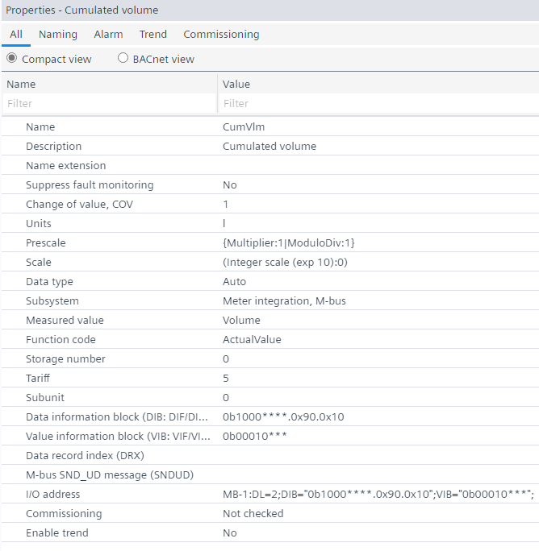

M-bus data point addressing and configuration
使用实例参数定义 M 总线数据点寻址。数据点值可以在任意时间点更改Properties选项卡。这Data information block(DIB) code andValue information block(VIB) 相应改变。

- DIB codes are used to automatically determine the Data type property. The VIB code only indicates the unit and the encoding resolution.
- The Measured value in the Properties tab determine the VIB code and is different for every object type. See the table below for more information.
- The Subunit, Tariff, Storage number and Function code in the Properties tab determine the DIB code.
- The user has to option to define the data point address. You can either directly modify the Data information block (DIB) code and Value information block (VIB) codes in Hex or binary format or use the predefined data point properties. These properties will directly change the DIB and VIB values to the correct settings.
- Function code, Storage number, Tariff and Subunit directly influence the DIB code.
Measured value will determine the VIB code. The allowed units will be determined by the measured value and the controller will scale them automatically according to the user selection. In case the user enters a custom VIB code not recognized by ABT Site, the measured value will be set to Custom. - The Datatype property does not influence the DIB code. This will be handled in the runtime system depending on the user’s selection. It is recommended that for most cases it stays in auto unless something specific is needed.